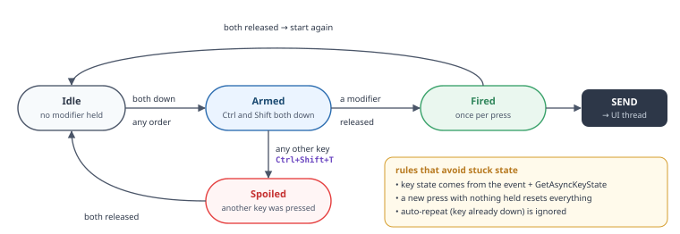

کلید ارسال Ctrl+Shift است: فشردن و رها کردن این دو، بدون هیچ کلید دیگری. این ترکیب در هیچ برنامهای
بهتنهایی کاری نمیکند، پس با کار کاربر تداخل ندارد. ولی ویندوز چنین چیزی را بهعنوان hotkey ثبت نمیکند
(RegisterHotKey همیشه یک کلید غیرمدیفایر میخواهد)، پس باید خودمان رویدادهای کیبورد را دنبال کنیم.
KeyboardHook یک هوک سطح پایین (WH_KEYBOARD_LL) روی نخ خودش نصب میکند. هر رویداد را
میگیرد، به ماشین حالت میدهد، و همیشه آن را به برنامهی بعدی رد میکند؛ هیچ کلیدی خورده نمیشود، حتی
F9.HotkeyStateMachine فقط تصمیم میگیرد: «این کلید، پایین یا بالا، و کدام کلیدها همین الان پاییناند»
را میگیرد و یکی از None، Send یا Skip را برمیگرداند. هیچ API ویندوزی صدا نمیزند.
Ctrl+Shift. ارسال در لحظهی رها کردن رخ میدهد، فقط اگر در این فاصله کلید دیگری زده نشده باشد.
در لحظهای که هر دو کلید پاییناند، هنوز معلوم نیست کاربر میخواهد Ctrl+Shift+T بزند (باز کردن دوبارهی
تب) یا Ctrl+Shift تنها. فقط وقتی کلیدها رها شوند و در این فاصله کلید دیگری نیامده باشد، نیت روشن است.
همین منطق باعث میشود میانبرهای عادی برنامهها هرگز به اشتباه ارسال نکنند.
در فاز ۱۱ یک بار Ctrl+Shift بیاثر ماند. علت: کلیدی وقتی رها شده بود که پنجرهی دیگری (یا صفحهی امن
ویندوز) کیبورد را در اختیار داشت، پس هوک هرگز رویداد «رها شد» را ندید و حالت Spoiled باقی ماند. راهحل در دو قانون
است: وضعیت هر کلید از خود رویداد بهاضافهی GetAsyncKeyState ساخته میشود (نه از حافظهی رویدادهای قبلی)،
و هر فشار تازهای که در لحظهاش هیچ مدیفایری واقعاً پایین نیست، همهچیز را از نو شروع میکند.
| سناریو | نتیجه |
|---|---|
فشردن Ctrl+Shift به هر ترتیب، یا با Ctrl راست | ارسال، یک بار |
| نگه داشتن طولانی (تکرار خودکار کلید) | ارسال، یک بار |
| دو فشار در کمتر از ۳۰۰ میلیثانیه | دومی نادیده |
ترکیبهای Ctrl+Shift+T، Ctrl+Shift+F24، Ctrl+F9 | هیچ |
فقط Ctrl یا فقط Shift | هیچ |
کلید F9 بدون مدیفایر | رد کردن (Skip) |
| فشار بعد از رد کردن، بدون حرف تازه | پیام Nothing new |
این سناریوها دو بار اجرا شدند: یک بار به شکل تست واحد با دنبالههای کلید شبیهسازیشده، و یک بار واقعی با اسکریپت
tools/keytest/hotkey-test.ps1 که کلیدها را فقط به یک پنجرهی تست موقت میفرستد. هیچ کلیدی گیر نکرد و فوکوس
همیشه به پنجرهی قبلی برگشت.
Windows cannot register Ctrl+Shift alone as a hotkey, so I use a low-level keyboard hook on its own thread that never swallows keys, and a pure state machine that decides. It fires on release, only if both modifiers were down together and no other key came in between, so normal shortcuts like Ctrl+Shift+T never trigger it. Key state is derived from the event plus GetAsyncKeyState, and a fresh press with nothing held resets the machine — that fixed a real bug where a key-up was missed while another desktop had the keyboard.